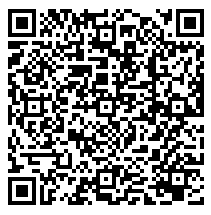
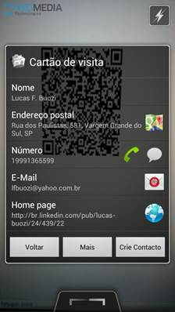
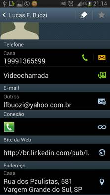

Lucas F. Buozi / Amanda C. Malagutti.
A partir de informações de contatos digitadas pelo usuário, a aplicação retornará um QR Code que poderá ser lido por simples aplicativos de smartphones e será automaticamente importado à lista de contatos do dispositivo.
Os parâmetros de entrada poderão ser: nome, número do celular, número do telefone comercial, número do telefone residencial, endereço de e-mail comercial, endereço de e-mail pessoal, endereço comercial, endereço residencial, URL do site, usuário de mensageiro instantâneo.
O retorno será uma imagem no formato JPEG conforme o exemplo abaixo:

Esta imagem é um QR Code com informações de um contato no formato vCard que, ao ser lida com qualquer programa leitor de códigos de barras, por exemplo: Barcode Scanner da ZXing Team ou NeoReader QR & Barcode Scanner da NeoMedia Technologies, ambos para Android, automaticamente podem ser importados para a lista de contatos do smartphone, como é exibido nas imagens abaixo:
 
O planejado é criar um front end básico em para uso em desktop e outro para uso na web com o formulário a ser preenchido e um objeto para exibir a imagem com o QR code.
Sendo possível o desenvolvimento da aplicação básica, uma segunda etapa é o desenvolvimento da autenticação e permitir a gravação de todas as informações em banco de dados.
Após isto, uma terceira etapa será o desenvolvimento de um dispositivo de busca de profissionais neste banco de dados, onde os resultados serão retornados como cartões de visitas.